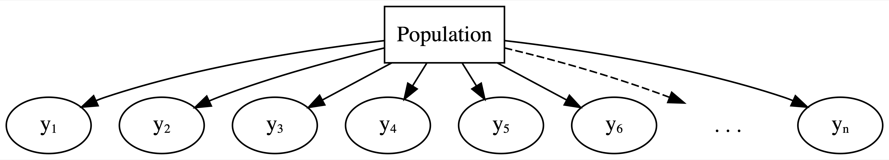

(Normal) Hierarchical Models with Predictors
The notes for this lecture are derived from Chapter 17 of the Bayes Rules! book
Complete pooling
Complete pooling
\[\begin{equation} \begin{split} Y_{ij} | \beta_0, \beta_1, \sigma & \sim N(\mu_i, \sigma^2) \;\; \text{ where } \mu_i = \beta_0 + \beta_1 X_{ij} \\ \beta_{0c} & \sim N(0, 35^2) \\ \beta_1 & \sim N(0, 15^2) \\ \sigma & \sim \text{Exp}(0.072) \\ \end{split} \end{equation}\]
This model depends upon three global parameters: intercept \(\beta_0\), age coefficient \(\beta_1\), and variability from the regression model \(\sigma\).
# Posterior summary statistics
model_summary <- tidy(complete_pooled_model,
conf.int = TRUE, conf.level = 0.80)
model_summary# A tibble: 2 × 5
term estimate std.error conf.low conf.high
<chr> <dbl> <dbl> <dbl> <dbl>
1 (Intercept) 75.2 24.6 43.7 106.
2 age 0.268 0.446 -0.302 0.842The net running times versus age exhibit a weak relationship with a posterior median model of 75.2 \(+\) 0.268 age.

Hierarchical model with varying intercepts
Layer 1:
\(Y_{ij} | \mu_j, \sigma_y \hspace{-0.075in} \sim \text{model of how song popularity varies WITHIN artist } j\)
Layer 2:
\(\mu_j | \mu, \sigma_\mu \hspace{-0.075in} \sim \text{model of how the typical popularity} \mu_j \text{varies BETWEEN artists}\)
Layer 3:
\(\mu, \sigma_y, \sigma_\mu \hspace{-0.075in} \sim \text{prior models for shared global parameters}\)
Layer 1: Variability within runner
The first layer of the simple Normal hierarchical model assumes that each runner’s net running times \(Y_{ij}\) vary normally around their own mean time \(\mu_j\), with no consideration of their age \(X_{ij}\):
\[Y_{ij} | \mu_{j}, \sigma_y \sim N(\mu_{j}, \sigma_y^2)\]
To incorporate information about age into our understanding of running times within runners, we can replace the \(\mu_{j}\) with runner-specific means \(\mu_{ij}\), which depend upon the runner’s age in their \(i\)th race, \(X_{ij}\).
\[\mu_{ij} = \beta_{0j} + \beta_1 X_{ij}\]
Thus, the first layer of our hierarchical model describes the relationship between net times and age within each runner \(j\) by:
\[\begin{equation} Y_{ij} | \beta_{0j}, \beta_1, \sigma_y \sim N(\mu_{ij}, \sigma_y^2) \;\; \text{ where } \; \mu_{ij} = \beta_{0j} + \beta_1 X_{ij} \end{equation}\]
Note that \(\beta_{0j}\) depends upon \(j\), and thus is runner- or group-specific:
- \(\beta_{0j}\) = intercept of the regression model for runner \(j\).
The other parameters are global, or shared across all runners \(j\)
- \(\beta_1\) = global age coefficient, i.e., the typical change in a runner’s net time per one year increase in age; and
- \(\sigma_y\) = within-group variability around the mean regression model \(\beta_{0j} + \beta_1 X_{ij}\), and hence a measure of the strength of the relationship between an individual runner’s time and their age.
The first layer of our hierarchical model assumes that relationships between running time and age randomly vary from runner to runner, having different intercepts \(\beta_{0j}\) but a shared age coefficient \(\beta_1\).

Layer 2: Variability between runners
In this layer we capture how the relationships between running time and age vary from runner to runner, i.e., between runners.
In this layer will model variability in the intercept parameters \(\beta_{0j}\).
\[\begin{equation} \beta_{0j} | \beta_0, \sigma_0 \stackrel{ind}{\sim} N(\beta_0, \sigma_0^2) \end{equation}\]
This layer of the hierarchical model which depends upon two new parameters:
- \(\beta_0\) = the global average intercept across all runners, i.e., the average runner’s baseline speed;
- \(\sigma_0\) = between-group variability in intercepts \(\beta_{0j}\), i.e., the extent to which baseline speeds vary from runner to runner.
Layer 3: Global priors
Regression model within runner \(j\): \(Y_{ij} | \beta_{0j}, \beta_1, \sigma_y \sim N(\mu_{ij}, \sigma_y^2) \text{ with } \mu_{ij} = \beta_{0j} + \beta_1 X_{ij}\)
variability in baseline speeds BETWEEN runners: \(\beta_{0j} | \beta_0, \sigma_0 \stackrel{ind}{\sim} N(\beta_0, \sigma_0^2)\)
priors on global parameters:
\[\beta_{0c} \sim N(m_0, s_0^2) \]
\[\beta_1 \sim N(m_1, s_1^2)\] \[\sigma_y \sim \text{Exp}(l_y)\] \[\sigma_0 \sim \text{Exp}(l_0)\]
Normal hierarchical regression assumptions
Let \(Y_{ij}\) and \(X_{ij}\) denote observations for the \(i\)th observation in group \(j\). The appropriateness of the Bayesian Normal hierarchical regression model of \(Y_{ij}\) by \(X_{ij}\) depends upon the following assumptions.
- Structure of the data
Conditioned on predictor \(X_{ij}\), the outcomes \(Y_{ij}\) on any one group \(j\) are independent of those on another group \(k\), \(Y_{ik}\). However, different data points within the same group \(j\), \(Y_{ij}\) and \(Y_{hj}\), are correlated.
- Structure of the relationship
Within any group \(j\), the typical outcome of \(Y_{ij}\) ( \(\mu_{ij}\) ) can be written as a linear function of predictor \(X_{ij}\).
- Structure of the variability within groups
Within any group \(j\) and at any predictor value \(X_{ij}\), the observed values of \(Y_{ij}\) will vary normally around mean \(\mu_{ij}\) with consistent standard deviation \(\sigma_y\). . . . - Structure of the variability between groups
The group-specific baselines or intercepts, \(\beta_{0j}\), vary normally around a global intercept \(\beta_0\) with standard deviation \(\sigma_0\).
Connecting the hierarchical and complete pooled models
The complete pooled model is a special case of the random intercepts model. These two models are equivalent when \(\sigma_0 = 0\), i.e., when the intercepts do not differ from group to group.
Another way to think about it
Equivalently, we can think of the runner-specific intercepts as random tweaks or adjustments \(b_{0j}\) to \(\beta_0\),
\[\beta_{0j} = \beta_0 + b_{0j}\]
where these tweaks are normal deviations from 0 with standard deviation \(\sigma_0\):
\[b_{0j} \sim N(0, \sigma_0^2)\]
Suppose that some runner \(j\) has a baseline running speed of \(\beta_{0j} = 24\) minutes, whereas the average baseline speed across all runners is \(\beta_0 = 19\) minutes. Thus, at any age, runner \(j\) tends to run 5 minutes slower than average. That is, \(b_{0j} = 5\) and
\[\beta_{0j} = \beta_0 + b_{0j} = 19 + 5 = 24\]
In general, then, we can reframe Layers 1 and 2 of our hierarchical model as follows:
\[\begin{equation} \begin{split} Y_{ij} | \beta_{0j}, \beta_1, \sigma_y & \sim N(\mu_{ij}, \sigma_y^2) \;\; \text{ with } \;\; \mu_{ij} = (\beta_0 + b_{0j}) + \beta_1 X_{ij} \\ b_{0j} | \sigma_0 & \stackrel{ind}{\sim} N(0, \sigma_0^2) \\ \beta_{0c} & \sim N(m_0, s_0^2) \\ \beta_1 & \sim N(m_1, s_1^2) \\ \sigma_y & \sim \text{Exp}(l_y) \\ \sigma_0 & \sim \text{Exp}(l_0). \\ \end{split} \end{equation}\]
\[\begin{equation} \begin{split} Y_{ij} | \beta_{0j}, \beta_1, \sigma_y & \sim N(\mu_{ij}, \sigma_y^2) \;\; \text{ with } \;\; \mu_{ij} = \beta_{0j} + \beta_1 X_{ij} \\ \beta_{0j} | \beta_0, \sigma_0 & \stackrel{ind}{\sim} N(\beta_0, \sigma_0^2) \\ \beta_{0c} & \sim N(100, 10^2) \\ \beta_1 & \sim N(2.5, 1^2) \\ \sigma_y & \sim \text{Exp}(0.072) \\ \sigma_0 & \sim \text{Exp}(1) \\ \end{split} \end{equation}\]
running_model_1_prior <- stan_glmer(
net ~ age + (1 | runner),
data = running, family = gaussian,
prior_intercept = normal(100, 10),
prior = normal(2.5, 1),
prior_aux = exponential(1, autoscale = TRUE),
prior_covariance = decov(reg = 1, conc = 1, shape = 1, scale = 1),
chains = 4, iter = 5000*2, seed = 84735,
prior_PD = TRUE)- We specify the model of
nettimes byageby the formulanet ~ age + (1 | runner). This essentially combines a non-hierarchical regression formula (net ~ age) with that for a hierarchical model with no predictor (net ~ (1 | runner)). - We specify
prior_PD = TRUEto indicate that we wish to simulate parameters from the prior, not posterior, models.
set.seed(84735)
running %>%
add_fitted_draws(running_model_1_prior, n = 4) %>%
ggplot(aes(x = age, y = net)) +
geom_line(aes(y = .value, group = paste(runner, .draw))) +
facet_wrap(~ .draw)
running %>%
add_predicted_draws(running_model_1_prior, n = 100) %>%
ggplot(aes(x = net)) +
geom_density(aes(x = .prediction, group = .draw)) +
xlim(-100,300)Posterior simulation & analysis
Most runners’ times do tend to increase with age, and there is variability between the runners themselves – some tend to be faster than others.
# Simulate the posterior
running_model_1 <- update(running_model_1_prior, prior_PD = FALSE)
# Check the prior specifications
prior_summary(running_model_1)
# Markov chain diagnostics
mcmc_trace(running_model_1)
mcmc_dens_overlay(running_model_1)
mcmc_acf(running_model_1)
neff_ratio(running_model_1)
rhat(running_model_1)There are a whopping 40 parameters in our model: 36 runner-specific intercept parameters ( \(\beta_{0j}\) ) in addition to 4 global parameters ( \(\beta_0, \beta_1, \sigma_y, \sigma_0\) ). These are labeled as follows in the stan_glmer() simulation results:
(Intercept)= \(\beta_0\)age= \(\beta_1\)b[(Intercept) runner:j]= \(b_{0j} = \beta_{0j} - \beta_0\), the difference between runner \(j\)’s baseline speed and the average baseline speedsigma= \(\sigma_y\)Sigma[runner:(Intercept),(Intercept)]= \(\sigma_0^2\)
Posterior analysis of the global relationship
Consider the global relationship between running time and age for the typical runner:
\[\beta_0 + \beta_1 X\]
# A tibble: 2 × 5
term estimate std.error conf.low conf.high
<chr> <dbl> <dbl> <dbl> <dbl>
1 (Intercept) 19.3 12.1 3.65 34.7
2 age 1.30 0.216 1.02 1.58There’s an 80% chance that the typical runner tends to slow down somewhere between 1.02 and 1.58 minutes per year.
Since this range is entirely and comfortably above 0 we conclude that the typical runner tends to slow down with age.
B0 <- tidy_summary_1$estimate[1]
B1 <- tidy_summary_1$estimate[2]
running %>%
add_fitted_draws(running_model_1, n = 200, re_formula = NA) %>%
ggplot(aes(x = age, y = net)) +
geom_line(aes(y = .value, group = .draw), alpha = 0.1) +
geom_abline(intercept = B0, slope = B1, color = "blue") +
lims(y = c(75, 110))Posterior analysis of group-specific relationships
To examine the runner-specific relationships between net running time and age we have
\[\beta_{0j} + \beta_1 X_{ij} \; = (\beta_0 + b_{0j}) + \beta_1 X_{ij}\]
First, the b[(Intercept) runner:j] chains correspond to the difference in the runner-specific and global intercepts \(b_{0j}\). Thus, we obtain MCMC chains for each \(\beta_{0j} = \beta_0 + b_{0j}\) by adding the (Intercept) chain to the b[(Intercept) runner:j] chains via spread_draws() and mutate(). We then use median_qi() to obtain posterior summaries of the \(\beta_{0j}\) chain for each runner \(j\):
Consider the results for runners 4 and 5. With a posterior median intercept of 30.9 minutes vs 6.9 minutes, runner 4 seems to have a slower baseline speed than runner 5. Thus, at any shared age, we would expect runner 4 to run roughly 24 minutes slower than runner 5 ( \(30.9 - 6.9\) ):
# Plot runner-specific models with the global model
ggplot(running, aes(y = net, x = age, group = runner)) +
geom_abline(data = runner_summaries_1, color = "gray",
aes(intercept = runner_intercept, slope = B1)) +
geom_abline(intercept = B0, slope = B1, color = "blue") +
lims(x = c(50, 61), y = c(50, 135))The posterior median models for our 36 runners \(j\) as calculated from the hierarchical random intercepts model (gray), with the posterior median global model (blue).
Posterior analysis of within- and between-group variability
\(\sigma_y\) measures the variability from the mean regression model within each runner.
\(\sigma_0\) measures the variability in baseline running speeds between the runners.
Simulated output for the relationship between response variable \(Y\) and predictor \(X\) when \(\sigma_y < \sigma_0\) (a) and \(\sigma_y > \sigma_0\) (b).
# A tibble: 2 × 3
term group estimate
<chr> <chr> <dbl>
1 sd_(Intercept).runner runner 13.3
2 sd_Observation.Residual Residual 5.25For a given runner \(j\), we estimate that their observed running time at any age will deviate from their mean regression model by roughly 5.25 minutes ( \(\sigma_y\) ).
In contrast, we expect that baseline speeds vary by roughly 13.3 minutes from runner to runner ( \(\sigma_0\) ).
Comparatively then, the posterior results suggest that \(\sigma_y < \sigma_0\) – there’s greater variability in the models between runners than variability from the model within runners.
Recall:
\[\text{Var}(Y_{ij}) = \sigma_0^2 + \sigma_y^2 .\]
Thus, proportionally differences between runners account for roughly 86.6% (the majority!) of the total variability in racing times, with fluctuations among individual races within runners explaining the other 13.4%:
Hierarchical model with varying intercepts & slopes
Observed trends in running time versus age for the 36 subjects (gray) along with the posterior median model (blue).
Model building
Our goal is to build a model which recognizes that in the relationship between running time and age, both the intercept (i.e., baseline speed) and slope (i.e., rate at which speed changes with age) might vary from runner to runner.
\[\begin{equation} Y_{ij} | \beta_{0j}, \beta_{1j}, \sigma_y \sim N(\mu_{ij}, \sigma_y^2) \;\; \text{ where } \mu_{ij} = \beta_{0j} + \beta_{1j} X_{ij} . \end{equation}\]
Previously we assumed that the runner-specific intercepts \(\beta_{0j}\) are Normally distributed around some global intercept \(\beta_0\) with standard deviation \(\sigma_0\), we now also assume that the runner-specific age coefficients \(\beta_{1j}\) are Normally distributed around some global age coefficient \(\beta_1\) with standard deviation \(\sigma_1\):
\[\begin{equation} \beta_{0j} | \beta_0, \sigma_0 \sim N(\beta_0, \sigma_0^2) \;\;\;\; \text{ and } \;\;\;\; \beta_{1j} | \beta_1, \sigma_1 \sim N(\beta_1, \sigma_1^2) \end{equation}\]
But these priors aren’t yet complete – \(\beta_{0j}\) and \(\beta_{1j}\) work together to describe the model for runner \(j\), and thus are correlated. Let \(\rho \in [-1,1]\) represent the correlation between \(\beta_{0j}\) and \(\beta_{1j}\). To reflect this correlation, we represent the joint Normal model of \(\beta_{0j}\) and \(\beta_{1j}\) by
\[\begin{equation} \left(\begin{array}{c} \beta_{0j} \\ \beta_{1j} \\ \end{array}\right) \vert \beta_0, \beta_1, \sigma_0, \sigma_1 \;\; \sim \;\; N\left( \left(\begin{array}{c} \beta_0 \\ \beta_1 \\ \end{array}\right), \; \Sigma \right) \end{equation}\]
(continued on the next slide)
where \((\beta_0, \beta_1)\) is the joint mean and \(\Sigma\) is the 2x2 covariance matrix which encodes the variability and correlation amongst \(\beta_{0j}\) and \(\beta_{1j}\):
\[\begin{equation} \Sigma = \left(\begin{array}{cc} \sigma_0^2 & \rho \sigma_0 \sigma_1 \\ \rho \sigma_0 \sigma_1 & \sigma_1^2 \\ \end{array}\right) \end{equation}\]
On the next slide, plot (a) illustrates the scenario in which there’s a strong negative correlation between \(\beta_{0j}\) and \(\beta_{1j}\) – models that start out lower (with small \(\beta_{0j}\)) tend to increase at a more rapid rate (with higher \(\beta_{1j}\)). In plot (c) there’s a strong positive correlation between \(\beta_{0j}\) and \(\beta_{1j}\) – models that start out higher (with larger \(\beta_{0j}\)) also tend to increase at a more rapid rate (with higher \(\beta_{1j}\)). In between these two extremes, plot (b) illustrates the scenario in which there’s no correlation between the group-specific intercepts and slopes.
hierarchical random intercepts and slopes model:
\[\begin{equation} \begin{array}{rl} Y_{ij} | \beta_{0j}, \beta_{1j}, \sigma_y & \sim N(\mu_{ij}, \sigma_y^2) \;\; \text{ where } \; \mu_{ij} = \beta_{0j} + \beta_{1j} X_{ij} \\ & \\ \left(\begin{array}{c} \beta_{0j} \\ \beta_{1j} \\ \end{array}\right) \vert \beta_0, \beta_1, \sigma_0, \sigma_1 & \sim N\left( \left(\begin{array}{c} \beta_0 \\ \beta_1 \\ \end{array}\right), \; \Sigma \right) \\ & \\ \beta_{0c} & \sim N(100, 10^2) \\ \beta_1 & \sim N(2.5, 1^2) \\ \sigma_y & \sim \text{Exp}(0.072) \\ \Sigma & \sim \text{(decomposition of covariance)}. \\ \end{array} \end{equation}\]
Equivalently, we can re-express the random intercepts and slopes as random tweaks to the global intercept and slope: \(\mu_{ij} = (\beta_0 + b_{0j}) + (\beta_1 + b_{1j}) X_{ij}\) with
\[\left(\begin{array}{c} b_{0j} \\ b_{1j} \\ \end{array}\right) \vert \; \sigma_0, \sigma_1 \sim N\left( \left(\begin{array}{c} 0 \\ 0 \\ \end{array}\right), \; \Sigma \right)\]
Connecting our hierarchical models
The random intercepts model is a special case of random intercepts and random slopes model. When \(\sigma_1 = 0\), i.e., when the group-specific age coefficients do not differ from group to group, these two models are equivalent.
We need a joint prior model to express our understanding of how the combined \(\sigma_0\), \(\sigma_1\), and \(\rho\) parameters define covariance matrix \(\Sigma\).
The stan_glmer() function allows users to define this prior through a decomposition of covariance, or decov(), model.
Very generally speaking, this model decomposes our prior model for the covariance matrix into prior information about three separate pieces:
the correlation between the group-specific intercepts and slopes, \(\rho\);
the combined degree to which the intercepts and slopes vary by group, \(\sigma_0^2 + \sigma_1^2\);
the relative proportion of this variability between groups that’s due to differing intercepts vs differing slopes,
\[\pi_0 = \frac{\sigma_0^2}{\sigma_0^2 + \sigma_1^2} \;\; \text{ vs } \;\; \pi_1 = \frac{\sigma_1^2}{\sigma_0^2 + \sigma_1^2}\]
In general, \(\pi_0\) and \(\pi_1\) always sum to 1, and thus have a push-and-pull relationship.For example, when \(\pi_0 \approx 1\) and \(\pi_1 \approx 0\), the variability in intercepts ( \(\sigma_0^2\) ) is large in comparison to the variability in slopes ( \(\sigma_1^2\) ).
Thus, the majority of the variability between group-specific models is explained by differences in intercepts (plot a).
In contrast, when \(\pi_0 \approx 0\) and \(\pi_1 \approx 1\), the majority of the variability between group-specific models is explained by differences in slopes (plot c).
In between these extremes, when \(\pi_0\) and \(\pi_1\) are both approximately 0.5, roughly half of the variability between groups can be explained by differing intercepts and the other half by differing slopes (plot b).
In our analysis, we’ll utilize the weakly informative default setting for the hierarchical random intercepts and slopes model: decov(reg = 1, conc = 1, shape = 1, scale = 1) in rstanarm notation.
This makes the following prior assumptions regarding the three pieces above:
1.the correlation \(\rho\) is equally likely to be anywhere between -1 and 1; 2.we have weakly informative prior information about the total degree to which the intercepts and slopes vary by runner; and 3.the relative proportion of the variability between runners that’s due to differing intercepts is equally likely to be anywhere between 0 and 1,
Posterior simulation & analysis
running_model_2 <- stan_glmer(
net ~ age + (age | runner),
data = running, family = gaussian,
prior_intercept = normal(100, 10),
prior = normal(2.5, 1),
prior_aux = exponential(1, autoscale = TRUE),
prior_covariance = decov(reg = 1, conc = 1, shape = 1, scale = 1),
chains = 4, iter = 5000*2, seed = 84735, adapt_delta = 0.99999
)
# Confirm the prior model specifications
prior_summary(running_model_2)This simulation will be sloooooooow.
Posterior analysis of the global and group-specific parameters
Remember thinking that the 40 parameters in the random intercepts model was a lot? This new model has 78 parameters: 36 runner-specific intercept parameters \(\beta_{0j}\), 36 runner-specific age coefficients \(\beta_{1j}\), and 6 global parameters ( \(\beta_0, \beta_1, \sigma_y, \sigma_0, \sigma_1, \rho\) ). Let’s examine these piece by piece, starting with the global model of the relationship between running time and age,
\[\beta_0 + \beta_1 X\]
The posterior median model is 18.4 + 1.32 age.
# Get MCMC chains for the runner-specific intercepts & slopes
runner_chains_2 <- running_model_2 %>%
spread_draws(`(Intercept)`, b[term, runner], `age`) %>%
pivot_wider(names_from = term, names_glue = "b_{term}",
values_from = b) %>%
mutate(runner_intercept = `(Intercept)` + `b_(Intercept)`,
runner_age = age + b_age)spread_draws() uses b[term, runner] to grab the chains for all runner-specific parameters. As usual now, these chains correspond to \(b_{0j}\) and \(b_{1j}\), the differences between the runner-specific vs global intercepts and age coefficients.
pivot_wider() creates separate columns for each of the \(b_{0j}\) and \(b_{1j}\) chains and names these b_(Intercept) and b_age.
mutate() obtains the runner-specific intercepts \(\beta_{0j} = \beta_0 + b_{0j}\), named runner_intercept, by summing the global (Intercept) and runner-specific adjustments b_(Intercept). The runner-specific \(\beta_{1j}\) coefficients, runner_age, are created similarly.
# Posterior medians of runner-specific models
runner_summaries_2 <- runner_chains_2 %>%
group_by(runner) %>%
summarize(runner_intercept = median(runner_intercept),
runner_age = median(runner_age))
# Check it out
head(runner_summaries_2, 3)# A tibble: 3 × 3
runner runner_intercept runner_age
<chr> <dbl> <dbl>
1 runner:1 18.5 1.06
2 runner:10 18.4 1.76
3 runner:11 18.5 1.32The posterior median models for all 36 runners.
The slopes do differ, but not as drastically as we expected.
Their posteriors suggest that, on average, runner 10’s running time increases by just 1.06 minute per year, whereas runner 1’s increases by 1.76 minutes per year:
For runners 1 and 10, the posterior median relationships between running time and age from the hierarchical random intercepts and slopes model (dashed) are contrasted by the observed no pooled models (blue) and the complete pooled model (black).
Posterior analysis of within- and between-group variability
Stepping back, we should also ask ourselves: Is it worth it? Incorporating the random runner-specific age coefficients introduced 37 parameters into our model of running time by age.
Consider some highlights of this output:
The standard deviation \(\sigma_1\) in the age coefficients \(\beta_{1j}\) is likely around 0.25 minutes per year. On the scale of a 10-mile race, this indicates very little variability between the runners when it comes to the rate at which running times change with age.
Per the output for \(\sigma_y\), an individual runner’s net times tend to deviate from their own mean model by roughly 5.17 minutes.
There’s a weak negative correlation of roughly -0.102 between the runner-specific \(\beta_{0j}\) and \(\beta_{1j}\) parameters. Thus, it seems that, ever so slightly, runners that start off faster tend to slow down at a faster rate.
Model evaluation & selection
complete_pooled_model - Complete pooled model
running_model_1 - A hierarchical random intercepts model
running_model_2 - A hierarchical random intercepts and slopes model
So which one should we use?
- How fair is each model?
- How wrong is each model?
- How accurate are each model’s posterior predictions?
Question 1
The context and data collection procedure is the same for each model. Since the data has been anonymized and runners are aware that race results will be public, we think this data collection process is fair. Further, though the models produce slightly different conclusions about the relationship between running time and age (e.g., the hierarchical models conclude this relationship is significant), none of these conclusions seem poised to have a negative impact on society or individuals. Thus, our three models are equally fair.
Question 2
Posterior predictive checks suggest that the complete pooled model comparatively underestimates the variability in running times – datasets of running time simulated from the complete pooled posterior tend to exhibit a slightly narrower range than the running times we actually observed. Thus, the complete pooled model is more wrong than the hierarchical models.
- The complete pooled model isn’t powerful enough to detect the significant relationship between running time and age.
- Not only have we seen visual evidence that some runners tend to be significantly faster or slower than others, the posterior prediction summaries suggest that there’s significant variability between runners ( \(\sigma_0\) ).
In choosing between running_model_1 and running_model_2, consider question (3): what’s the predictive accuracy of these models?
How well do these two models predict the running outcomes of the 36 runners that were part of our sample?
By all metrics, running_model_1 and running_model_2 produce similarly accurate posterior predictions.
For both models, the observed net running times tend to be 2.62 and 2.54 minutes, or 0.46 and 0.44 standard deviations, from their posterior mean predictions.
The posterior predictive models also have similar coverage in terms of the percent of observed running times that fall within their 50% and 95% prediction intervals.
Thinking beyond our own sample of runners, we could also utilize prediction_summary_cv() to obtain cross-validated metrics of posterior predictive accuracy.
For hierarchical models, the prediction_summary_cv() function divides groups, not individual outcomes \(Y\), into distinct folds.
Thus, if we have 10 groups, 10-fold cross-validation will build each training model using data on 9 groups and test it on the 10th group.
After reflecting upon our model evaluation, we’re ready to make a final determination: we choose running_model_1.
The complexity introduced by the additional random age coefficients in running_model_2 produced little apparent change or benefit. Thus, the additional complexity simply isn’t worth it (at least not to us).
Posterior prediction
Suppose we want to predict the running time that three different runners will achieve when they’re 61 years old: runner 1, runner 10, and Miles.
In general, let \(Y_{new,j}\) denote a new observation on an observed runner \(j\), specifically runner \(j\)’s running time at age 61.
\[Y_{\text{new},j}^{(i)} | \beta_{0j}, \beta_1, \sigma_y \; \sim \; N\left(\mu_{ij}^{(i)}, \left(\sigma_y^{(i)}\right)^2\right) \;\; \text{ where } \; \mu_{ij}^{(i)} = \beta_{0j}^{(i)} + \beta_1^{(i)} \cdot 61\]
The resulting posterior predictive model will reflect two sources of uncertainty in runner \(j\)’s race time: the within-group sampling variability \(\sigma_y\) (we can’t perfectly predict runner \(j\)’s time from their mean model); and posterior variability in \(\beta_{0j}\), \(\beta_1\), and \(\sigma_y\) (the parameters defining runner \(j\)’s relationship between running time and age are unknown and random).
Since we don’t have any data on the baseline speed for our new runner, Miles, there’s a third source of uncertainty in predicting his race time: between-group sampling variability \(\sigma_0\) (baseline speeds vary from runner to runner).
The posterior median prediction is just under 100 minutes, similar to what we’d get if we plugged an age of 61 into the global posterior median model for the average runner:
That is, without any information about Miles, our default assumption is that he’s an average runner.
Our uncertainty in this assumption is reflected by the relatively wide posterior predictive model. Naturally, having observed data on runners 1 and 10, we’re more certain about how fast they will be when they’re 61. But Miles is a wild card – he could be really fast or really slow!
Details: Longitudinal data
The running data on net times by age is longitudinal.
We observe each runner over time, where this time (or aging) is of primary interest. Though our hierarchical models of this relationship account for the correlation in running times within any runner, they make a simplifying assumption about this correlation: it’s the same across all ages. In contrast, you might imagine that observations at one age are more strongly correlated with observations at similar ages. For example, a runner’s net time at age 60 is likely more strongly correlated with their net time at age 59 than at age 50. This is a limitation of our model